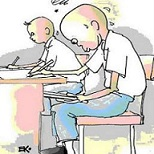

Jalan Pintas

| No. | Kriteria | Identitas |
| 1 | Judul | Jalan Pintas |
| 2 | Pengarang | Indri Yanti Kusuma |
| 3 | Jumlah Kata | >1312 Kata |
| 4 | Bahasa | Indonesia & Inggris |
| 4 | Tahun | 2017 |
Sonia menyandarkan sepeda federalnya di samping penyangga atap parkiran. Masih sepuluhan sepeda yang menemani sepedanya. Hari masih pagi sekali. Belum banyak siswa atau siswi yang datang. Kelasnya juga masih sepi. Baru ada seorang yang datang menemani Sonia, dia sedang menyapu. Namanya Rini, anak pindahan dari Jogja. Anaknya pendiam. Dia hanya menoleh dan melemparkan senyum pada Sonia.
Sonia mengambil sapu dari sudut kelas. Baru tiga ayunan dia menyapu, Luna masuk dan langsung menyeretnya ke sudut kelas “Kamu punya uang?” bisik luna.
"Mau pinjam?" tebak Sonia.
Luna buru - buru memberi isyarat pada Sonia agar tidak bicara keras - keras. Siswa - siswa lain mulai berdatangan. Tentu saja siswa yang kebagian tugas piket, yang memang harus berangkat lebih awal untuk membersikan kelas.
"Berapa?" Sonia berbisik.
"Lima puluh ribu" jawab Luna berbisik pula.
Luna menebarkan mata ke segenap ruangan, kemudian mengangguk pada Sonia.
"Untuk apa?" tanya Sonia kepada Luna dengan penasaran.
Luna belum sempat menceritakannya, karena Novi teman sebangkunya menegurnya "Kerjakan belum beres udah ngerumpi, masih pagi Non!" tegur Novi.
Sonia tentu saja penasaran. Lima puluh ribu? Untuk apa Luna pinjam uang sebanyak itu? Jangan - jangan ia nunggak SPP. Gawat urusannya kalua begini. Apalagi Senin besok hari pertama UUB. Bisa tidak dapat nomor peserta ujian.
"Nunggak? Nggak layaw. Tiap awal bulan papa selalu ngasih. Nggak pernah telat" elak Luna pada Sonia saat istirahat.
"Bisa saja kamu embat uangnya buat makan - makan" tuding Sonia.
"Enak aja, emang gue apaan?" Luna berkata kesal. "Makanya dengerin dulu."
Mau tak mau Sonia memperhatikan dengan serius.
"Kau kan tahu sebentar lagi UUB. Dan pasti matematikany banyak dan rumit – rumit. Pokoknya dapat nilai enam saja udah untung. Otak kita kan paling alergi sama"
"Stop... stop! Telapak tangan Sonia terngkat." Kok ngelentur sih jadinya. Ngomong yang jelas dong. To the point aja dech!" Omong Sonia nggak sabaran."
"Sory deh, maksudku gini, ada orang yang nawarin bocoran soal – soal UUB plus lima puluh ribu perak" Jelas Luna.
"Oo…" Sonia mengangguk - anggukkan kepala. Enak juga kalua begitu. Beli aja semua bocoran soal semua bidang studi. Bakalan jadi rangking pertama, pikirnya dalam hati. Guru - guru pasti heran. Novi pasti kesaingan. Apalagi si Rini. Meski katanya jago matematika, terbukti punya banyak tropi dari berbagai lomba matematika, belum tentu dapat sepuluh. Ingat Rini, Sonia jadi teringat pujian Pradit pada anak baru itu, "Enggak cuma cantik, tapi juga pintar" Begitu pujinya, waktu Rini disuruh memperkenalkan diri di depan kelas dan tentang menceritakan semua prestasi yang pernah diraihnya. Sonia jadi sebel, sepertinya Pradit menganggap anak - anak yang cantik rata - rata bloon.
"Dimana, Son?" Desak Luna, wajahnya serius penuh harapan. Tapi Sonia justru mempermasalahkan panggilan dirinya: "Son". Bola mata Sonia hendak meloncat. "Emangnya aku anak laki - laki" Bentak Sonia pada Luna.
"Bagaimana Sonia?" Luna mengalah meski jengkel. Bagaimana pun dia butuh bantuan. Dan Luna pun tak mungkin minta pada papanya. Taka da kesempatan untuk beralasan dan Sonialah satu - satunya harapan.
"Aku juga pingin. Tapi, aku piker - piker dulu, ya" Jawab Sonia.
"Waktunya mendesak, friend."
Sonia mengedikan bahu. Kemudian bangkit, berjalan meninggalkan Luna karena bel telah berbunyi. Dan Luna pun mengikuti langkah Sonia dari belakang.
Bel istirahat berbunyi. Sonia berjalan menuju kantin untuk membeli makanan favoritnya: Bakso. Baru saja Sonia menyuapkan sesendok bakso ke mulutnya, seorang laki - laki di depanya bertanya. Sebuah tanya basa - basi dan sesungguhnya tak perlu jawaban. Pertanyaan bodoh, begitu Sonia menyebutnya. Apakah tidak bodoh kalua sudah lihat dia pakai seragam putih abu - abu, masih saja ditanya "Anak es-em-pe, ya?" Sonia pun hanya menganggukan kepala dan masih melakukan suapan - suapan berikutnya.
"Sebentar lagi UUB, ya?" Tanya laki - laki itu lagi.
Sonia mengangguk lagi. Sudah tau tanya lagi, hati Sonia bergumam.
"Saya punya jalan pintas untuk dapat nilai bagus tanpa harus bersusah payah untuk belajar" Ujarnya lagi.
Kali ini Sonia mengangkat muka. Laki - laki di depanya itu tersenyum.
“Nama saya Doni” Tanganya terulur dan Sonia menyambutnya sembari menyebutkan namanya juga. “Saya punya jalan pintas untuk dapat nilai bagus tanpa belajar” Ujar laki – laki itu lagi. “Sonia tertarik?” Tanya Doni.
“Tergantung, kalua sama saja dengan jalan pintasnya Luna, kayaknya nggak. Bocoran soal, khan?” Duga Sonia.
“Sonia sudah tau?” Doni terkejut. Tapi tak kalah terkejutnya Sonia. Padahal tadi Ia asal bicara saja. Tadi bahkan tak percaya ada jalan pintas semacam itu.
“Aku bisa turunkan harga untuk kamu” Bujuk Doni.
Sonia diam, berfikir. Diam – diam Sonia tertarik juga pada tawaran itu. Tapi nanti dulu, mesti tanya – tanya dulu biar tidak kena tipu.
“Bagaimana?” Desak Doni.
“Pikir – piker dulu, deh” Purtus Sonia.
“Kalu berubah pikiran, besok temui aku di sini” Ujar Doni lagi.
Sonia pun mengangguk lalu pergi dari depan Doni.
Sesampai di rumah Koko, kakaknya Sonia yang duduk di kelas 3 SMA, kaget.
“Apaan itu! Itu bohong, itu pekerjaan penipu” kata kakaknya dengan nada tinggi.
Sonia tidak bertanya lagi. Kelanjutannya dia tanyakan pada Luna keesokan paginya. Luna berfikir bakal dipinjami uang menceritakan dengan senang hati. “Tetanggaku pernah pakai cara gituan, dan hasilnya sangat memuaskan. Dia dapat nilai sepuluh. Kamu tertarik? Kita patungan juga boleh. Tapi tolong pinjami aku dulu” Ujar Luna panjang lebar.
“Belinya dimana” Selidik Sonia.
“Di depan situ, depan sekolah, yang jual namanya Doni!” Jawab Luna.
“Terus caranya gimana?” Tanya Sonia lagi.
“Terserah, kau boleh tulis jawabannya di secarik kertas buat dicontek. Bisa juga hanya mempelajari soal – soal itu atau dua – duanya, Luna menjelaskan pada Sonia dengan semangat 45. Sonia hanya manggut – manggut.
“Kemungkinan gagal satu banding sepuluh,” Tambah Luna lagi.
“Enggalah, mending kita belajar biar pintar,” Jawab Sonia singkat.
Luna jelas sebel. Kalau tahu begitu nggak perlu susah – susah cerita.
Meski bilang tidak tertarik, diam – diam jadi juga Sonia bertransaksi dengan Doni. “Beres siapapun, termasuk Luna, bakal terbengong – bengong dengan nilai matematikaku nanti, lihat saja!” Sonia bergumam dalam hati.
Menyaksikan teman – temanya pada sibuk belajar, Sonia tertawa dalam hati. Terlebih berapa diantara mereka tengah sibuk menyiapkan contekan. Ada yang menulis rumus kecil – kecil di secarik kertas ada yang di pahanya, kemudian ditutup rok, ih, malu! Apalagi Luna lebih ekstrem lagi, dia memasukan secarik kertas contekannya di balik kaos dalamnya.
Melihat itu Sonia meledek Luna. “Namanya juga usah,” Kata Sonia meniru gaya iklan di TV.
Mata Luna langsung melotot. “Kamu nggak belajar?” Tanya Luna dengan heran pada Sonia. Sonia Cuma tersenyum.
“Sudah buat contekan?” Tanya Luna penasaran.
“Enak saja nuduh” Elak Sonia. “Gini – gini otakku bisa diandalin. Aku kan sudah belajar dari kemarin – kemarin. Tidak SKS kayak kamu,” Jawab Sonia dengan nada tinggi.
“SKS, apaan?” Tanya Luna.
“Sistem Kebut Semalam, tau!” Teriak Sonia di depan teman – temanya.
Luna tentu saja marah – marah. Dia menyumpah – menyumpah, mengutuk Sonia biar mendapat nilai bebek. Sonia dengan santainya berjalan ke kantin. Sonia masih senyam – senyum kayak orang gila. Pradit yang berpapasaan dengan Sonia di depan kantin sampai terheran – heran. Sonia baru saja beranjak dari kantin setelah terdengar suara bel. Wajahnya cerah, kontras banget dengan wajah – wajah temannya yang tampak tegang, maklum sebagian besar siswa menganggap bidang studi satu ini sebagai beban.
Dengan tenangnya dan penuh percaya diri Sonia menyiapkan alat tulisnya, sementara pengawasnya UUB mulai membagikan lembar jawaban, kemudian disusul kertas buram dan yang terkhir adalah lembar soal. Sonia telah siap mengeluarkan secarik kertas berisi jawaban. Dia memang tidak belajar, hanya membaca sekilas bocoran soal yang telah dibelinya dari Doni. Kemudian menyalin jawabannya di secarik kertas, untuk apa susah – susah payah belajar kalua sudah punya jalan pintas itu?
Bel tanda mulai mengerjakan soal berbunyi. Sonia membaca lembar soal yang ada di depannya, tapi seketika juga ketenangannya terusik. Dibaca lagi, sambal diingatkan soal yang diabeli itu. Ndak sama! Sonia yakin memang beda. Kok jadi begini? Sonia makin was – was, setelah itu keringat dingin mulai membajiri tubuhnya. Sonia bingung dan jengkel. Sonia sadar jalan pintasnya salah arah. Sialnya, dia sama sekali tidak belajar. Tubuh lemas sekali. Kini buyar sudah angannya untuk menyaingi, sekaligus membuat guru dan teman – temannya terlongo. Justru dia yang bakal terlongo, menyesali semuanya. Tapi semua itu sudah terlambat.